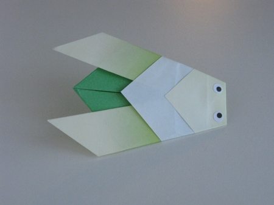

intresting facts about chameleon
- THEY MAINLY CHANGE COLOR IN ORDER TO COMMUNICATE OR REGULATE BODY TEMPERATURe
- THEIR FEET WORK LIKE SALAD TONGS
- ALMOST HALF OF ALL KNOWN SPECIES LIVE IN MADAGASCAR

intresting facts about pigeon
- THEY MIGHT BE THE FIRST DOMESTICATED BIRD. THEY WON OVER CHARLES DARWIN—AND NIKOLA ...
- Pigeons are incredibly complex and intelligent animals. Pigeons are renowned for their outstanding navigational abilities
- They are one of only a small number of species to pass the 'mirror test' – a test of self recognition. They can also recognise each letter of the human alphabet, differentiate between photographs, and even distinguish different humans within a photograph.

intresting facts about ciceda
- Cicadas can survive a huge fall as babies, or nymphs
- Most have red-orange eyes.
- Females may be attracted to the sound of motors.
intresting facts about panda
- Cubs are well protected in their first month.
- Their eyes are different to normal bears
- They have great camouflage for their environment.

intresting facts about camel
- There Are Three Species of Camels
- Camels Don't Store Water in Their Humps
- They Do the Heavy Lifting

intresting facts about teddy bear
- The official term for a teddy bear collector is an ‘arctophile’.
- The Oxford English Dictionary dates the first use of the term teddy bear to 1906.
- Jackie Miley, from Hilly City, South Dakota. She has the world’s biggest teddy bear collection, totaling 8,026 bear friends in 2012.